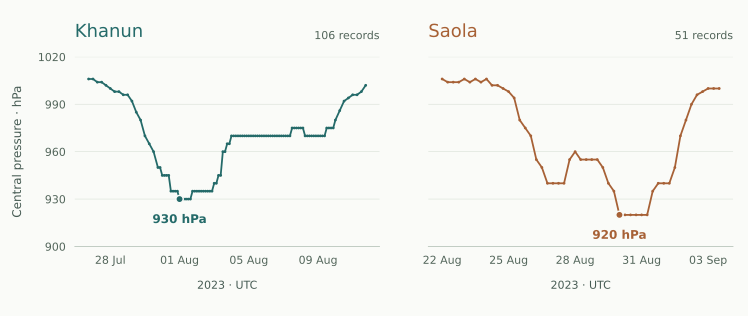

A method that works across storms
Take over a regional ensemble project whose largest errors occur around recurvature, weak steering and coast-parallel motion. Establish which failures arise in the atmospheric forecast, which are introduced by the tracker, and which are hidden by probability calibration. Deliver one automated method for 0–96 h track and first-landfall forecasts.
Khanun and Saola are the intensive diagnostic cases. Historical storms form separate development, calibration and evaluation sets, with all cycles of a storm kept together. New-event forecasts use the data available at their initialization time.
Establish why the storms take different paths, why the inherited forecast fails, and which interventions change the responsible processes. Deliver both a forecast method and a physical explanation that survives tests on another storm. A useful result may also rule out a plausible mechanism or locate a limit to predictability.

A track is only one part of the evidence
Central-pressure records place the changing track alongside the storm’s evolution. Both panels use the same pressure scale and retain all archived times. These are observations used for context, not forecast scores.
EvolventAI · JMA best-track archive ↗
The research environment
| Resource | What is available |
|---|---|
| GFS / GEFS | GRIB2 initial and boundary fields through 96 h, including the control and perturbed members. The data index describes each cycle, forecast lead, release time, vertical level and grid. |
| Himawari AHI | Calibrated infrared B13 observations up to the decision cutoff, navigation, scan times and quality masks. Missing scans remain identifiable; spatial remapping must preserve their time and quality information. |
| JMA / IBTrACS | JMA agency-specific development tracks, with IBTrACS identifiers for event matching. The JMA position convention is used consistently; agency intensities are not mixed. Held-out reference tracks remain evaluator-side. |
| ERA5 | Retrospective development diagnostics for pressure-level circulation, potential vorticity, shear and steering flow. These fields are unavailable to the forecast entry point for held-out events. |
| Terrain / coast / SST | Model geography, land masks, terrain, pre-cutoff SST and a versioned high-resolution coastline segmented along arc length. The plotting basemap is separate from the landfall verification geometry. |
| Baseline archive | Global-ensemble tracks, original WRF fields and tracking logs, historical bias correction, restart files and notes on completed and failed experiments. |
An environment for numerical weather research
WRF-ARW / WPS, MPI, NetCDF and ecCodes are installed with local manuals, compiled executables, geography tables and tested namelists. The baseline uses 27 km and 9 km fixed nests with 61 vertical levels. A supplied 3 km nest configuration supports a controlled sensitivity experiment; its domain is selected from pre-cutoff information. Boundary interpolation, restart handling and failure diagnosis are part of the work.
Python tools include xarray, Dask, cfgrib, wrf-python, MetPy, Satpy, Cartopy, SciPy and a geodesic geometry library. Read-only source data, editable analysis code, scratch space, checkpoints and submission outputs occupy separate paths. A full baseline run and a small input-validation case are supplied.
Fields for process diagnosis
The diagnostic package includes native-grid pressure, geopotential, density, three-dimensional winds, potential temperature and all active water species; surface sensible and latent heat fluxes, radiation and precipitation; and scheme-specific accumulated tendencies. It supplies 10-minute state output, integration-step accumulated budget terms for selected experiments, variable definitions and restart-aware readers. Compare finer sampling where closure is sensitive to output frequency.
Development diagnostics also include post-initialization AHI scans and GPM IMERG Final precipitation with quality and sampling information. ERA5 supplies environmental context. Match each observation at its actual spatial and temporal support. Infrared cloud-top temperature describes cloud structure, not latent heating; AHI and IMERG also share retrieval information and are not fully independent evidence. These retrospective products belong to the analysis workspace.
Forecast inputs are selected by release time. A cycle published before initialization can supply boundary fields for the next 96 hours. ERA5 and best tracks support retrospective diagnosis; the new-event forecast uses the operational inputs available at initialization.
The investigation
Investigate how much of the error comes from the atmospheric forecast and how much from extracting a track. The paired experiments below distinguish those explanations. Choose the diagnostics and implementation, revise the method as evidence develops, and use further experiments where a mechanism remains uncertain.
| Initial state ↓ / Boundary treatment → | B0 Original boundary | B1 Boundary intervention |
|---|---|---|
| A0 Original initial state | L00 Baseline Both factors unchanged | L01 Boundary only Keep the initial state |
| A1 Initial-state intervention | L10 Initial state only Keep the boundary treatment | L11 Joint intervention Measure the interaction |
Interaction in lossL11 − L10 − L01 + L00
Compute contrasts on paired cases, then aggregate by storm. A negative interaction means the joint loss reduction exceeds the sum of the two individual reductions. Use circulation diagnostics and ablations to explain which physical process produces that difference.
-
01
Reconstruct the inherited experiment
Reproduce the inherited baseline. Bring time, coordinates, units and accumulated fields onto a consistent basis, then compare the archived tracks with centers extracted from the raw model fields. Describe how any differences affect the forecast.
-
02
Separate a misplaced vortex from a lost tracker
Build storm-centered composites using pressure, 850 hPa vorticity, wind symmetry and temporal continuity. Retain competing centers near terrain or interacting systems. Re-run the old and revised trackers on identical fields; then hold the tracker fixed while comparing model configurations.
-
03
Locate the mechanism of a failed turn
Compare vortex-removed, mass-weighted steering over 850–300 hPa and 700–300 hPa. Examine subtropical-ridge displacement, upstream trough evolution, beta drift and asymmetric convection. Identify when and where the mechanisms diverge, then design an intervention that distinguishes them.
-
04
Run a controlled intervention matrix
Cross an initialization or vortex treatment with a large-scale boundary or nudging treatment in a 2×2 experiment. Use matched members and random seeds, with nudging fields from the available forecasts. Cover both diagnostic storms and another development event; estimate each effect and their interaction.
-
05
Test resolution and structural uncertainty
Evaluate the supplied 3 km nest on a coastal development case against its 9 km parent. Keep initialization and eligible boundary data matched. Test a physically motivated microphysics or boundary-layer alternative, measure changes in vortex structure, and distinguish a resolution effect from a changed tracking or coast-crossing rule.
Use one-way nesting (feedback=0), keeping the parent realization fixed. Record the physical settings that change with resolution. For each experiment, save its hypothesis, model and tracker settings, member seeds and diagnostic results.
-
06
Preserve separate trajectory branches
Represent recurving and coast-following branches in a weighted trajectory distribution. Fit bias correction, member weights and bandwidth on development and calibration storms. Quantify how missing scans, ambiguous centers and model failures change the probability assigned to each branch.
-
07
Derive landfall from the same forecast
Intersect each weighted trajectory with the fixed coastline and identify its first sea-to-land crossing within 96 h, including island crossings. Resolve segment boundaries and time interpolation deterministically. Produce segment probabilities, conditional crossing times, no-landfall probability and explicit unresolved mass from those same trajectories.
-
08
Test the method on new storms and incomplete observations
Run leave-one-storm-out validation, a missing-scan experiment and a fixed 10% member-loss experiment. Remove each retained intervention in turn to measure its contribution. Save the final code and calibration, then use the same entry point to forecast new storms.
In each leave-one-storm-out fold, refit bias correction, ensemble weights and bandwidth, and select the interventions using the remaining development storms. Keep every cycle of the omitted storm out of fitting and selection. Save the fold forecasts and failures before fitting the final method.
Explain the atmosphere behind the track
Complete the eight analyses below on Khanun and Saola. Use the same matched runs as the forecast experiments, then test the leading explanation on a third development storm. Start with competing hypotheses and the observations that would distinguish them. The task does not prescribe which mechanism should win.
M01Separate displacement, timing and structural error
Resolve position error along and across the reference motion, and separate an early or late turn from a wrong turning direction. Compare sea-level-pressure, low-level circulation and layer-wise vorticity centers. In both Earth-fixed and storm-relative coordinates, diagnose vortex tilt, radius of maximum wind, warm-core depth and azimuthal wavenumber-one asymmetry. Track how these quantities evolve before the forecasts diverge.
Use the identical model fields to compare trackers. Report center uncertainty and repeat the diagnostics for plausible alternative centers. Earth-fixed differences reveal displacement; recentered differences reveal structural changes. Keep both, so recentering does not erase a real dynamical error.
M02Identify the flow that changes the motion
Diagnose mass-weighted, vortex-removed steering in the 850–300 and 700–300 hPa layers. Compare 200–500 and 300–800 km annuli, with terrain masks and valid-area weights. Follow the subtropical ridge, upstream trough, monsoon circulation and nearby vortices. Separate errors in environmental wind from errors caused by the forecast vortex sampling a different location or depth.
Integrate the steering-error vector over time and compare its direction and magnitude with the developing track error. Diagnose beta-related asymmetry and storm–environment interaction in the remaining motion; the motion-minus-steering residual is not, by definition, beta drift. Test the attribution against a second vortex-removal method and the alternative layers and annuli.
M03Close a potential-vorticity tendency budget
Compute Ertel potential vorticity and its azimuthal wavenumber-one tendency in a translating storm frame. Resolve horizontal and vertical advection, diabatic production, friction and the terms required by the chosen moist thermodynamics. Include center motion in the budget. To diagnose propagation independently, restore the Earth-fixed physical tendency and fit its translation component; retain deformation and fitting residuals. Compare the inferred velocity with tracked motion.
Calculate budgets on the native staggered grid before remapping. Save the observed tendency, every resolved term and the residual, with consistent averaging intervals. Compare integrated contributions and residuals across radius, height and time; repeat with finer sampling. A process attribution must resolve a change larger than its numerical uncertainty. Treat any unresolved remainder as a remainder, rather than assigning it to heating.
M04Connect shear, convection and vortex evolution
In coordinates aligned with the 200–850 hPa environmental shear, follow tilt orientation, quadrant rainfall, vertical mass flux, lower-tropospheric equivalent potential temperature and midlevel dry-air inflow. Diagnose the height and azimuth of heating, its relation to vortex alignment, and upper-level outflow and ridge changes. Compare AHI cloud organization and IMERG rainfall with the corresponding model fields.
Compare the chronology under matched microphysics or boundary-layer perturbations. Test whether convection reorganizes before the motion changes, or instead responds to a displaced vortex. Include a competing explanation involving environmental steering, and carry the observed time lag into the intervention test. Use a radiative-transfer operator if directly comparing simulated and observed brightness temperatures.
M05Explain the moisture and rainfall response
Close a column total-water budget for moving disks of 200, 400 and 600 km radius: storage change, transport through the moving boundary, evaporation, precipitation and residual. Include vapor and all active condensates, the model-top flux and the terrain lower boundary. Separate moisture convergence from depletion of stored water, and diagnose the contribution of storm motion to the apparent transport.
Evaluate rainfall in geographic and storm-relative coordinates, with the same accumulation interval and observation support. Quantify displacement and intensity errors separately. Follow the nearshore change in moisture inflow and surface enthalpy flux; determine whether a better track also improves the rainfall process, or merely moves a biased rain field into the observed location.
M06Test lower-boundary and terrain mechanisms
For a coastal development case, run paired SST and terrain sensitivities, changing one factor at a time. Perturb SST by ±0.5 K and ±1 K with a smooth ocean-only mask. Compare the original terrain with a smoothly reduced-height experiment, keeping the coastline and land-use categories fixed and rebuilding balanced initial fields. Save adjustment transients as well as the later response.
Trace the response through surface fluxes, frictional convergence, vertical motion, vortex structure and track or rainfall change. The imposed-SST runs measure atmospheric sensitivity to a lower boundary; they do not establish an interactive cold-wake feedback. Explain which part of the terrain response survives after the initial adjustment and whether its sign persists across members.
M07Explain the split between trajectory branches
Group members into physical trajectory branches and compare their states before separation. Evaluate ridge position, steering depth, tilt and convective asymmetry as candidate precursors. Re-run matched small perturbations to the initial state and boundary forcing, keeping each family separate. Estimate how branch probabilities and error growth respond to perturbation amplitude and to removal of each retained intervention.
Choose any branch predictor within the training storms and test it on the omitted storm. Correlations among ensemble members identify a candidate process; targeted reruns test it. Report regimes where the explanation transfers, where it changes sign and where the available observations cannot distinguish the branches. A persistent spread by itself does not establish an intrinsic predictability limit.
M08Test a physical explanation beyond the original case
Before each targeted rerun, state the expected sign, location and timing of the process response and of the track or rainfall response. Use matched controls, at least two perturbation amplitudes, and a check that the intervention changed its intended process. Test the strongest explanation on the third development storm without revising the predicted sign after viewing that result.
Compare the leading explanation with its strongest alternative, and classify each hypothesis as supported, rejected or unresolved according to the evidence. Report effect sizes, storm-level uncertainty and budget residuals. A null response can reject a predicted effect under the tested conditions when the intervention worked and the response interval lies within a physically meaningful tolerance stated before the rerun. Otherwise, specify the observation or intervention needed to distinguish the remaining explanations.
The research files
Deliver a method that forecasts new storms, together with the experiments that explain its improvement. The research files connect individual trajectories, probability estimates and landfall results to the physical interpretation in the report.
data_notes.md- Data and preparation
tracks.parquet- Ensemble trajectories
position_distribution.nc- Position and uncertainty
landfall.json- First landfall
experiments.parquet- Experiment notebook
ablation.json + report.md- Results and interpretation
run_case.sh + environment.lock- Run the method
diagnostics.nc- Atmospheric diagnostics
mechanism_tests.parquet + hypotheses.md- Process responses and competing hypotheses
figures/ + plot_data/- Figures that explain the result
How the work is evaluated
A successful solution meets all eight research criteria, earns at least 90/100 overall and at least 80% in each scoring dimension. Compare against three fixed baselines: the global ensemble, the original regional pipeline and historical bias correction. All methods use the same evaluation events.
| Criterion | Dimension | Pass condition |
|---|---|---|
| T01 | Integrity | Run every evaluation case with consistent units, coordinates and ensemble members. Probability mass sums to one within 10⁻⁶; unresolved mass is at most 1% per cycle on ordinary inputs. Missing members keep their original probability weight. |
| T02 | Tracks & turns | Storm-balanced track error improves ≥20% overall and ≥10% at each of 24/48/72/96 h against every frozen baseline. Turning-time MAE improves ≥15%, with no increase in missed turns or false turns. |
| T03 | First landfall | All-event multiclass Brier score improves ≥10% against every baseline. Conditional first-crossing time MAE improves ≥15% on the fixed common set; false-landfall rate does not increase. |
| T04 | Distribution quality | Spherical-vector energy score improves ≥15% at every lead. The nominal 90% regions cover 85–95% of references at each lead, while their mean area does not exceed the frozen calibrated reference. |
| T05 | Transfer | At least 70% of held-out storms improve against the strongest track baseline selected on calibration storms. No difficult group regresses in track, landfall Brier or energy score; the paired storm-bootstrap 95% lower bound for overall track gain is positive. |
| T06 | Scientific evidence | Complete the factorial, tracker, resolution/physics and ablation experiments, plus M01–M08 below. At least one retained intervention has a positive lower 95% bound for paired improvement evaluated on omitted development storms, with intervention selection inside each training fold. Earn at least 32/40 for scientific evidence, with no mechanism dimension below 3/5. |
| T07 | Controlled stress | Under the fixed missing-scan and 10% member-loss inputs, all outputs remain valid, missing weight is explicit and unresolved mass ≤12%. Track error and landfall Brier score, both conditional on resolved mass for this stress check only, degrade by ≤10% relative to the method’s own complete-input result. |
| T08 | Repeatability | Run the same method on the evaluation storms. With the same software and random seeds, two runs agree within 1 km in position, 10⁻⁴ in probability and 1% in aggregate metrics, with the same research-criterion outcomes. |
Exactly what is compared
Aggregation and uncertainty
At each lead, average eligible cycles within a storm, then average storms equally; the overall track metric weights the four leads equally. Gains are 1 − candidate loss / baseline loss. A zero baseline loss must be matched exactly. Use 10,000 paired bootstrap resamples of complete storms, preserving all cycles. The 95% interval is the 2.5th–97.5th percentile range.
Recompute the ratio of mean losses inside each bootstrap draw; do not average the ratios of individual storms. If any draw has zero baseline loss, report the relative interval as undefined and give the number of such draws. For T05 and T06, use the 95% lower bound of the paired absolute loss reduction in that case. The zero-baseline exact-match requirement still applies.
Track geometry and event groups
The point track is the weighted geodesic medoid of the resolved samples. Distances use the fixed reference ellipsoid. A turning event changes bearing by ≥60° over 12 h and retains the new direction for the next 6 h, with both compared 6 h displacements ≥30 km and the following 6 h bearing within 30° of the new bearing. Candidate turn times within 12 h of one another are merged at the largest angle change; reference and forecast turns are matched one-to-one within ±12 h. A missing match receives a 96 h penalty. Coastal cases approach within 200 km of the fixed coastline; weak-steering cases have development-diagnostic steering <3 m s⁻¹ for ≥12 h. Event grouping is performed from references, never from a submitted forecast.
Probability and unresolved members
Map positions to 3-D unit vectors scaled by Earth’s mean radius. Compute weighted energy score with Euclidean chord distances in that space. With unresolved weight u, the loss is (1−u) × conditional energy score + u × Earth’s diameter. Track loss is (1−u) × medoid error + u × half the circumference. If no mass resolves, only the failure term remains. The landfall Brier vector includes every coast segment, no landfall and unresolved; the observed unresolved category is always zero.
Landfall and timing
The first sea-to-land crossing determines the landfall category; no crossing within 96 h is also an outcome. Use the supplied coastline and geodesic interpolation at steps of at most 15 min, assigning boundary ties in the published segment order. Evaluate timing on the fixed set of observed landfalls where all three baselines give at least 5% landfall probability. Candidate probability below 5% receives a 96 h timing loss. Report the conditional median landfall time and its MAE.
Coverage and sharpness
Construct 90% highest-density regions on the supplied equal-area grid using the bandwidth selected during development. Include every forecast case and the full grid, with its cell areas. Compare the mean area with the global ensemble calibrated on the separate calibration storms; use those saved parameters throughout evaluation.
The missing-scan test removes the final two hours of pre-cutoff infrared observations; the member-loss test removes 10% of members by a supplied deterministic mask, rounded up, with weights recorded before the mask. Apply the two tests separately. The ordinary-input gates T01–T05 are evaluated on complete supplied inputs; T07 uses conditional skill on resolved mass and reports the penalized losses separately.
Evaluation uses a fixed set of forecast cases, with one record per case. The candidate and all baselines share the same storms at each lead, including recorded failed runs. The chord-based position score uses R = 6371.0088 km; multicategory Brier loss is the sum of squared errors across all declared categories.
Report the paired loss difference for every storm, the sample size of each difficult group and the overall improvement after omitting each storm in turn. Use this sensitivity analysis to describe how widely the improvement holds. Omitting an already predicted storm measures influence; it does not replace refitted leave-one-storm-out validation.
Reference uncertainty is part of the report: recompute geometric landfall labels for the nine combinations of ±0.05° and zero latitude/longitude offsets, reflecting the archived coordinate precision. Report which classifications or timing conclusions change. Nominal scoring uses the published central coordinates and the fixed interpolation rule.
Rubric: 100 points
| Dimension | Points | Evidence used |
|---|---|---|
| Observation handling and ensemble consistency | 10 | Five components, 2 points each: forecast-time data selection, units and grids, member correspondence, probability conservation and agreement between the research files. |
| Track, turns and transfer | 20 | Overall gain, all-lead gain, turning gain, storm coverage, and group/interval criteria: 4 points each. |
| Landfall | 10 | Brier improvement: 4 points. Timing improvement and false-landfall control: 3 points each. |
| Probability | 10 | Energy-score improvement: 4 points. Coverage and area: 3 points each. |
| Scientific evidence | 40 | Eight mechanism dimensions, M01–M08, worth 5 points each. Score the process diagnosis, the test of competing explanations and the evidence for transfer using the anchors below. |
| Incomplete inputs and repeatability | 10 | Missing satellite scans and lost ensemble members: 3 points each. Repeated experiments: 4 points. |
Numerical criteria retain their stated thresholds. Scientific evidence contributes 40 points and is scored separately from forecast skill. A persuasive mechanism analysis cannot replace a failed forecast requirement, and improved forecast scores cannot replace a missing physical explanation.
Scientific evidence: eight dimensions, 40 points
M01–M08 correspond to the eight analyses above. Each receives an integer score from 0 to 5. Two domain reviewers score the saved diagnostics and rerunnable experiments independently; a third resolves differences greater than one point or disagreements about passing. Numerical scripts check the submitted fields and effects; scientific reviewers assess the physical inference.
0: no usable analysis. 1: descriptive plots only. 2: quantitative diagnosis, but the proposed cause has not been distinguished from an alternative. 3: a reproducible comparison tests the alternative, with effect size, uncertainty and a conclusion bounded by the evidence.
4: the comparison also survives the relevant center, sampling, budget, observation or perturbation sensitivities. 5: a physical prediction is confirmed by a separate paired rerun or storm, or a successful intervention yields a response interval entirely within a prespecified physical tolerance, rejecting the predicted effect under those conditions. Score the inference, not whether the initially favored hypothesis survives.
For M01–M02, show that the error decomposition and flow attribution survive changes in coordinates and steering definitions. M03 and M05 require an explicit residual and convergence evidence. M04 and M06 require an observed or simulated process response preceding the proposed consequence. M07 tests branch predictions outside the fitting storm; M08 tests the stated causal chain and its strongest alternative.
Data and software references
A task from your field?
Bring a research question or an existing workflow.